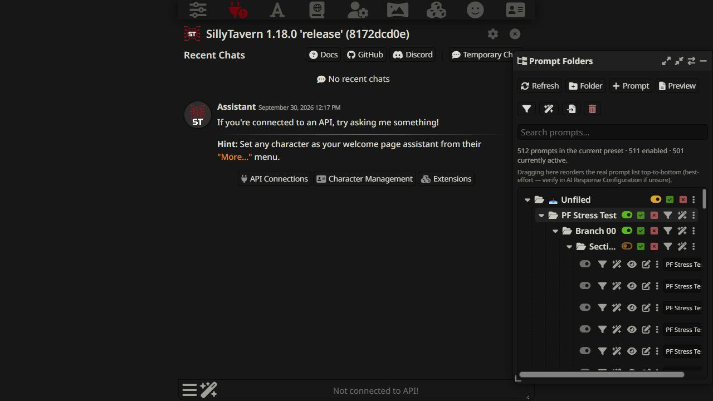

STPHE / Overview
What is STPHE?
Silly-Tavern-Prompt-Hierarchy-Expanded — STPHE — brings folders, reusable filter presets, and automatic prompt control to SillyTavern’s Chat Completion Prompt Manager.
01 / Organize
Build a prompt hierarchy
Keep large prompt collections in folders and nested subfolders.
02 / ReuseGroup your filter presets
Save matching rules and organize them into their own hierarchy.
03 / AutomateRespond to the conversation
Enable or disable prompts when recent chat meets a condition.
What STPHE controls
The floating panel organizes the prompts in the current Chat Completion preset. Changes apply to SillyTavern’s native prompt states and order. It does not provide an AI model or API service.
Inside the extension


About the project
Created by miputra. Formerly named Prompt Folders. Existing settings and exports remain compatible.
Made with Claude 4.6 Sonnet, ChatGPT 5.6 Sol, and ChatGPT 6 ASTRA.